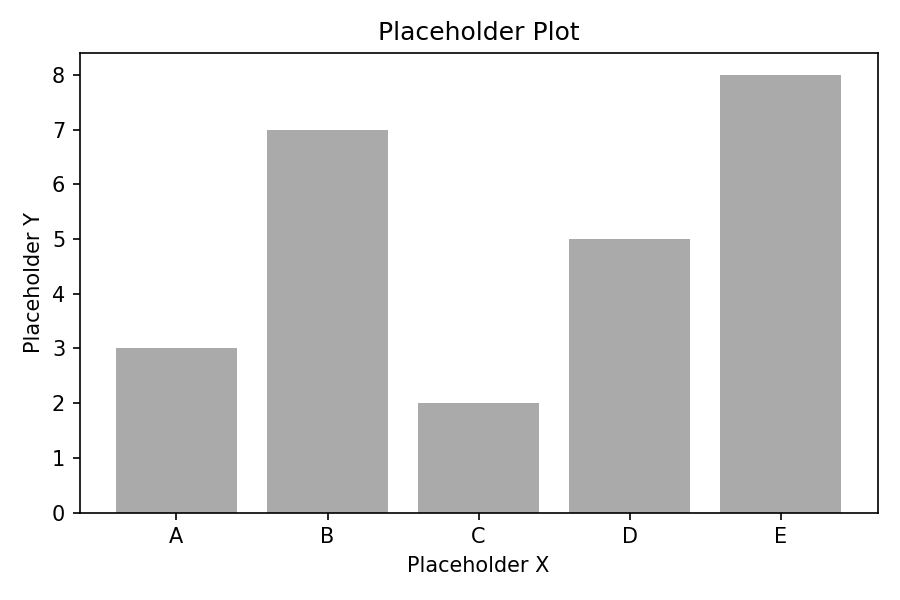

TODO: Insert tldr
TODO: Insert intro
TODO: Insert link_to_ai

TODO: Insert how_i_reacted
TODO: Insert what_i_did
TODO: Insert what_i_wanted_to_do
TODO: Insert models_used_in_replication caption
| Model | Accuracy | Honesty |
|---|---|---|
| Model A | 0.85 | 0.42 |
| Model B | 0.91 | 0.38 |
| Model C | 0.72 | 0.67 |
TODO: Insert differences_to_og
TODO: Insert interpretation
TODO: Insert interpretation_new_models
TODO: Insert flops_note1
TODO: Insert introduce_the_basis2
\[TODO: Insert placeholder\_formula\]
TODO: Insert basis_vectors_empirical caption
| Model | Accuracy | Honesty |
|---|---|---|
| Model A | 0.85 | 0.42 |
| Model B | 0.91 | 0.38 |
| Model C | 0.72 | 0.67 |
TODO: Insert honesty_in_terms_of_basis
\[TODO: Insert placeholder\_formula\]
TODO: Insert honesty_is_lossy
TODO: Insert interp_dumb_and_diplomatic
Unpressured Query Pressured Query
│ │
▼ ▼
┌─────────┐ ┌─────────┐
│ Belief │ │ Belief │
└────┬────┘ └────┬────┘
│ │
▼ ▼
┌─────────┐ ┌────────────────────┐
│ Response │ │ Truthful │ Lie │ ...│
└─────────┘ └────────────────────┘TODO: Insert dumb_and_diplomat caption
TODO: Insert empirical_lossy_demonstration
TODO: Insert 1D_projections
TODO: Insert other_1d_projections caption
| Model | Accuracy | Honesty |
|---|---|---|
| Model A | 0.85 | 0.42 |
| Model B | 0.91 | 0.38 |
| Model C | 0.72 | 0.67 |
TODO: Insert more_examples_of_2d_projections
TODO: Insert recap
TODO: Insert encourage_the_basis_framing
TODO: Insert shout_out_inspect
TODO: Insert shout_out_misc